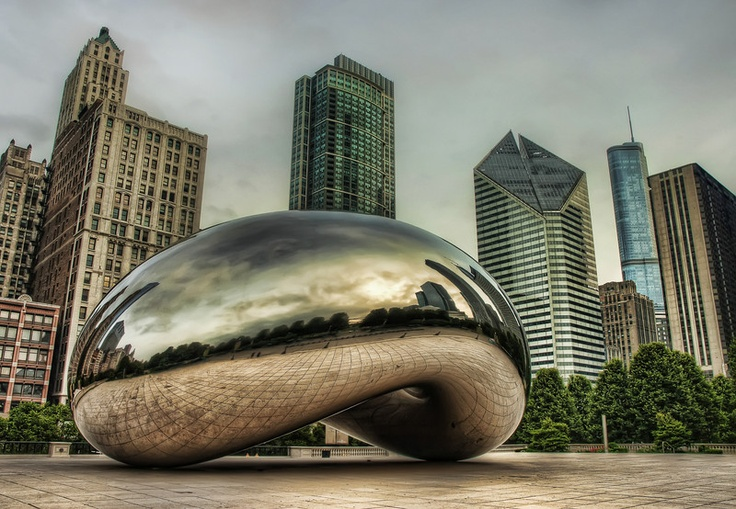
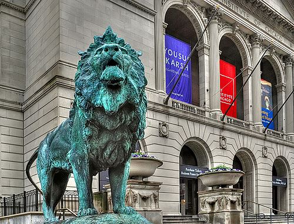
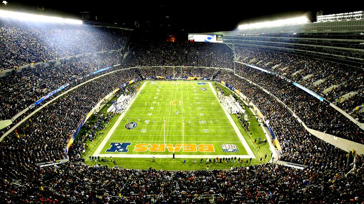
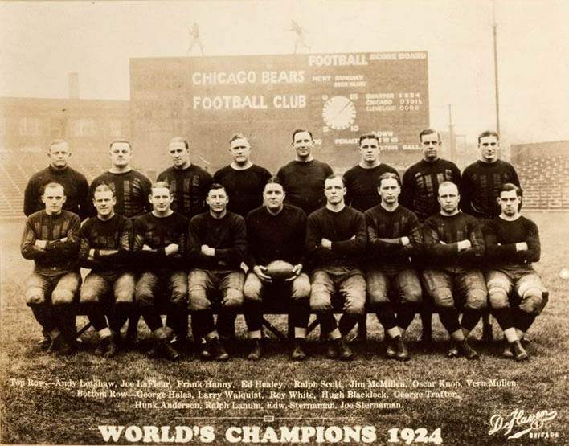

Welcome to Chicago's Favorite Sports Hub
There are many things that Chicagoans care about: Tall buildings, food, city life, summer,
and even politics.


And yet, nothing compares to our love of history.
Millions of people visit The Windy City every year, and many go to our beautiful museums.

What some do not realize, however...
is that we have amazing museums elsewhere that can house
tens of thousands of people at one time.

Chicago's stadiums house some of the most iconic franchises in sports history.

And some of the greatest moments in sports that the world has ever seen...
Many fans around the world go to sporting events for entertainment,
but our fans go for the love of the game.
No matter what the season... or the weather condition.
No matter how long we have been waiting for our team to finally do the unthinkable.
We thrive off the past,
with iconic names of our legends.
From Jordan...
to Sweetness...
Banks, Sandberg...
Thomas, Aparicio, Shoeless Joe...
Butkus, Sayers, Singletary, Halas, Ditka...
Hull, Mikita, Esposito...
Pippen, Jackson...
Although we look to the past, we are hopeful for the future of sports in our city.
The stars of today look to give ourselves and our families even more memories to cherish.
And above all else...
The one thing we look to achieve...
Is GLORY.
This is Chicago.
We are Skyline Sports.